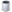

With the Server Edition of TGPX you have the ability to create TGP pages for any of the sites hosted on the same server as your TGPX installation. This also gives you the ability to have separate gallery submission forms, search forms, and partner management interfaces for each site. This document will provide information on how to configure domains in your TGPX installation and also how to setup the scripts on the domains you add.
Searching Domains
To search the current domains you have configured so you can modify or delete them, access the Settings > Manage Domains function from the control panel menu. This will display a page where you will be able to see and search the current domains you have configured. All of the database fields that you can search use the software's Standard Search function. In the table that displays the domains, you will find a couple of functions that you can run on a single domain at a time. Those functions are described below.
| Click this icon to edit the domain. A window will appear where you will be able to edit all of the domain settings. | |
|  | Click this icon to delete this domain. |
Adding a Domain
To add a new domain, access the Settings > Manage Domains function from the control panel menu. Near the top of the page in the header bar that reads "Manage Domains" click on the
 icon. This will display a popup
window where you will be able to enter the domain information that you want to use. Each of the form fields are described below.
icon. This will display a popup
window where you will be able to enter the domain information that you want to use. Each of the form fields are described below.
| Domain | Enter the domain name of the site, excluding the www. portion. |
| Base URL | Enter the base URL of the website (i.e. http://www.domain.com) This is used only to assist when creating new TGP pages, and will not restrict you to creating TGP pages only in the base of your website. |
| Document Root | Enter the document root directory of the website. This should be a full directory path to the main directory of the site on your server. This is used only to assist when creating new TGP pages, and will not restrict you to creating TGP pages in only this directory. |
| Tags | Enter the tags that should be assigned to any galleries submitted from this domain |
| Template Prefix |
If you would like to use custom templates for the script pages (gallery submission form, partner form, search) enter a prefix to use for
the template files. This field can be left blank if you want to use the default templates on this domain.
Create templates with this prefix If you check this box, the software will automatically make copies of the partner, submit, report, search, and e-mail templates with this prefix. To use this feature, the templates directory will need to have it's permissions set to 777. If you enter a template prefix, but do not check this box you will need to create the template files manually. |
| Categories | Select the categories that submitters will be allowed to select from when submitting galleries through this domain. |
|
Use the above selected categories as an exclusion list If you would rather select the categories that will NOT appear on the gallery submission form, check this box. When this is checked, the gallery submission form will display all of your categories EXCEPT for those listed in the Categories setting. |
Editing a Domain
To edit a domain you will first need to locate it through the Manage Domains interface. When you locate the domain you want to edit, click on the icon to bring up the domain editing interface. This interface is nearly identical to the domain creation interface, and has the same form fields with the same properties. You can make the changes that you want, and then press the Update Domain button to save your changes.
Deleting a Domain
To delete a domain you will first need to locate it through the Manage Domains interface. When you locate the domain you want to delete, click on the icon, which will ask you to confirm the deletion.
Creating TGP Pages for Domains
Creating TGP pages for other domains is no different than creating pages for the domain on which TGPX is installed. You will simply need to enter the appropriate Path & Filename and Page URL settings when adding the new page. Be sure that you use a full directory path when adding new pages; you must tell the software exactly where to create the file on your server so it is necessary to include the complete directory path.
If you have setup domains through the Manage Domains interface, you will be able to select them from a drop-down list on the interface where you add pages. This will speed up adding pages, as it will fill in the filename and page URL values with an initial setting which you can then edit rather than having to fill in the entire field.
Configuring TGPX Scripts on Other Domains
If you would like to use a separate gallery submission form, partner account form, search form, or gallery reporting form on each of your domains, that can be done with TGPX but will require a bit of configuration. Use these steps to setup the scripts on your other domains:
- Make sure the domain has been configured in the Manage Domains interface first.
- Decide on a directory where you would like the TGPX scripts to reside on the domain. For this example, let's assume that you will be placing them in a directory named tgpx.
- Make copies of the following scripts, and place them in the tgpx directory on the addon domain:
-
code.php
cropper.php
index.php
partner.php
report.php
search.php
submit.php
- You will now need to edit each of these files (except the index.php file) in a text editor. Locate this comment near the top of each file:
// If you are using this script on one of the domains you have defined in the // Manage Domains interface, uncomment the following line and set the directory // path to your TGPX Server Edition installation //chdir('/full/path/to/tgpxse/install'); Uncomment the chdir line like so:// If you are using this script on one of the domains you have defined in the // Manage Domains interface, uncomment the following line and set the directory // path to your TGPX Server Edition installation chdir('/full/path/to/tgpxse/install'); In the Manage Domains interface in the green box near the top of the page you will find the chdir() value you will need to use. Copy that value in place of the current chdir() value in the file. For example, if the Manage Domains interface gave you this:chdir('/var/www/vhosts/yoursite.com/html/tgpx'); The updated code in the script file would look like this:// If you are using this script on one of the domains you have defined in the // Manage Domains interface, uncomment the following line and set the directory // path to your TGPX Server Edition installation chdir('/var/www/vhosts/yoursite.com/html/tgpx'); - After editing the files, be sure to put the updated versions of the files on your server. The scripts are now configured and ready for use. Just be sure that any template which links to these scripts is not pointing to the domain where TGPX is installed - the links should point to the scripts that you have copied to the addon domain.